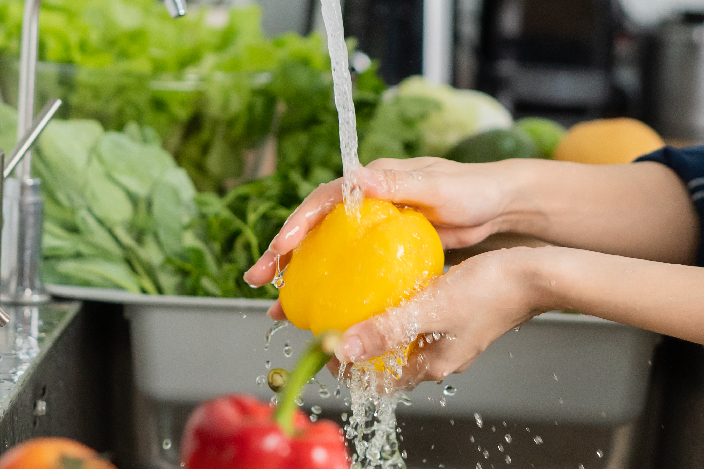

The Glorious Ratatouille
When it comes to mixing up vegetables, Ratatouille takes the prize.
I have made this dish as an elegant layers of eggplant, zucchini and tomatoes.
But my children's favourite is the vegetables added together, plus my other
favourite vegetables, like mushrooms and potatoes.
The herbs are also very forgiving, you can add the stated herbs,
Tarragon
Dill Weed
Thyme
Organo
But first, add herbs you know and are familiar with, and remember
herbs sometimes don't play well together. So, if you are not familiar
experiment first.
Please let us know what you think of this recipe in hte comment section.

First Step to any food prep: to carefully wash all the vegetables

Once you vegetables are all clean, cut as you prefer, some like it bite size, som like sliced, You do You!

Finally find the most fresh basil leave you can find and add some mixed in and some on top for garnish and to nibble

Serve with bread or rice or enjoy like a warm salad!
Ingredients:
- 1 eggplant, diced
- 1 zucchini, sliced
- 1 yellow squash, sliced
- 1 red bell pepper, chopped
- 1 yellow bell pepper, chopped
- 1 onion, chopped
- 4 cloves garlic, minced
- 2 cups tomato sauce
- Salt and pepper to taste
- Fresh basil for garnish
Instructions:
- Preheat your oven to 375°F (190°C).
- In a large pan, sauté the onion and garlic until translucent.
- Add the eggplant, zucchini, yellow squash, and bell peppers. Cook until tender.
- Pour in the tomato sauce and season with salt and pepper. Let it simmer for 10 minutes.
- Transfer the mixture to a baking dish and bake for 30 minutes.
- Garnish with fresh basil before serving. Enjoy!